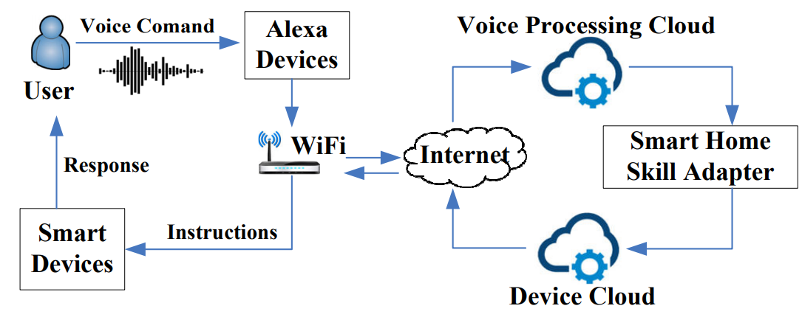
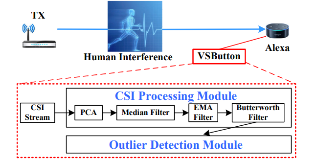
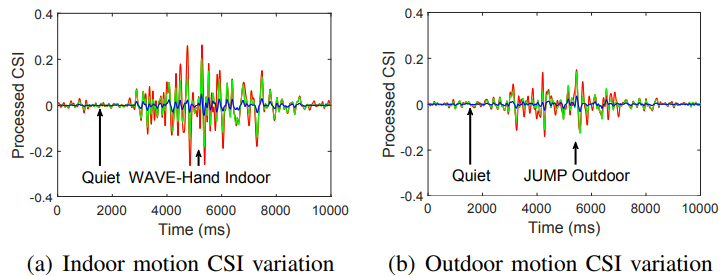

Department of Computer Science and Engineering,
Michigan State University
428 S SHAW LN, ROOM 3115
East Lansing, MI 48824-1266
Email: ghtu AT msu.edu
Office: 1124 Engineering Building
Home Digital Voice Assistants (HDVAs) are getting popular in recent years. Users can control smart devices and get living assistance through those HDVAs (e.g., Amazon Alexa, Google Home) using voice. In this work, we study the insecurity of HDVA services by using Amazon Alexa and Google Home as case studies. We disclose three security vulnerabilities which root in their insecure access control. We then exploit them to devise two proof-of-concept attacks, home burglary and fake order, where the adversary can remotely command the victim’s HDVA device to open a door or place an order from Amazon.com or Google Express. The insecure access control is that HDVA devices not only rely on a single-factor authentication but also take voice commands even if no people are around them. We thus argue that HDVAs should have another authentication factor, a physical presence based access control; that is, they can accept voice commands only when any person is detected nearby. To this end, we devise a Virtual Security Button (VSButton), which leverages the WiFi technology to detect indoor human motions. Once any indoor human motion is detected, the HDVA device is enabled to accept voice commands. Our evaluation results show that it can effectively differentiate indoor motions from the cases of no motion and outdoor motions in both laboratory and real world settings.


